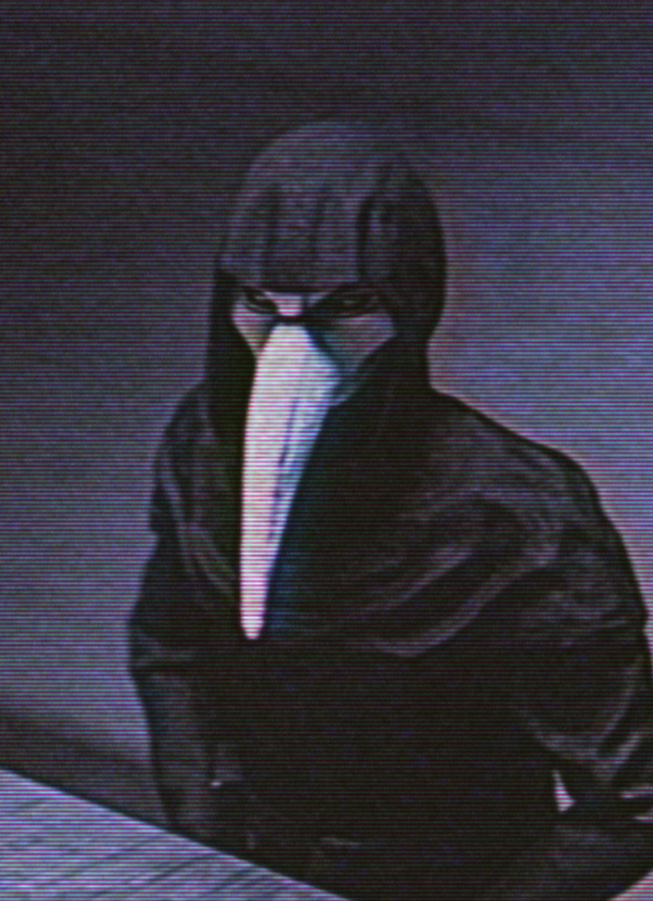

SCP-049 после обнаружения.
КЛАСС: Евклид
SCP-049 - гуманоидное существо ростом около 190 см, внешне схожее со средневековым чумным доктором. На первый взгляд кажется, что SCP-049 облачён в толстый балахон и керамическую маску, характерные для данной профессии, однако, судя по этим предметам одежды, они постепенно выросли из тела самого SCP-0491 и на данный момент неотличимы от того, что могут скрывать под собой. Тем не менее, рентгеновские снимки показывают, что под этим внешним слоем у SCP-049 имеется скелет, схожий с человеческим.
SCP-049 способен изъясняться на многих языках, хотя в основном предпочитает английский и старофранцузский2. Характер у SCP-049 в основном дружелюбный, объект охотно идёт на контакт с сотрудниками Фонда, однако, если по мнению объекта рядом присутствует то, что он называет "Поветрие", он становится крайне раздражительным, а иногда и вовсе агрессивным. Суть этого "Поветрия" не ясна исследователям Фонда, но, похоже, для SCP-049 оно представляет особую важность.
SCP-049 проявляет открытую агрессию к тем, кого он считает поражёнными "Поветрием", в таких случаях его зачастую необходимо сдерживать. Имея свободу действий, SCP-049 как правило пытается убить такого субъекта; SCP-049 способен останавливать все биологические функции в организме посредством прямого контакта открытых участков тела. Механизм этого явления неизвестен, результаты вскрытия жертв, убитых SCP-049 таким образом, неоднозначны во всех случаях. SCP-049 выражает досаду или раскаяние по поводу этих смертей, заявляя, что жертвы не старались бороться с "Поветрием", хотя при этом обычно стремится провести на трупе примитивную операцию с помощью инструментов, которые постоянно носит с собой в чёрной врачебной сумке3. Операция не всегда приводит к "успеху", но зачастую приводит к созданию SCP-049-2.
SCP-049-2 - оживлённые трупы субъектов, прооперированных SCP-049. Судя по внешним признакам, они не сохраняют воспоминаний и умственных навыков и наделены лишь базовыми двигательными навыками и механизмами реагирования. В целом они малоподвижны, двигаются редко и бессистемно, но при побуждении или по команде SCP-049, могут стать крайне агрессивными. У SCP-049-2 имеются активные биологические функции, однако они радикально отличаются от известной современной науке физиологии человека. Несмотря на эти отличия, SCP-049 нередко утверждает, что субъекты "исцелились".
SCP-049 был обнаружен в ходе расследования нескольких случаев пропажи людей без вести в окрестностях Монтабана, на юге Франции. Во время облавы в одном из частных домов было найдено несколько экземпляров SCP-049-2, а также сам SCP-049. Между представителями органов охраны правопорядка и агрессивными экземплярами 049-2 произошло столкновение. SCP-049 наблюдал за ходом столкновения и делал пометки в своём журнале. После того, как все экземпляры SCP-049-2 были нейтрализованы, SCP-049 добровольно сдался в руки Фонда.
SCP-049 после обнаружения.